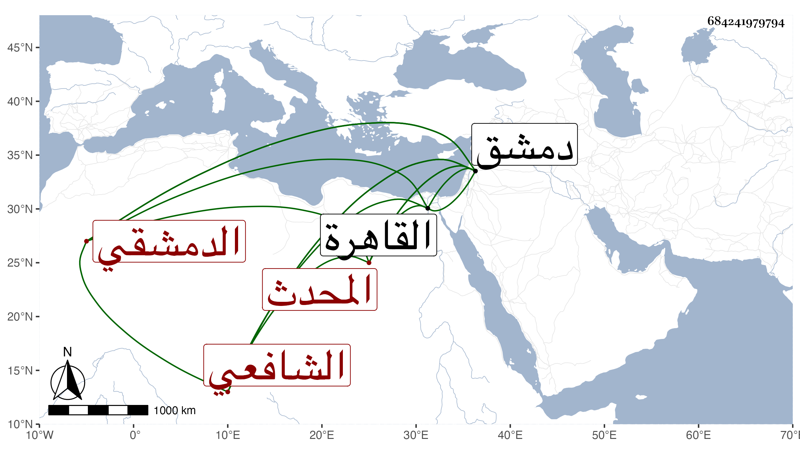

0902Sakhawi.DawLamic.ITO20230111-ara1.EIS1600.684241979794
Biography ID: 684241979794
إبراهيم بن محمد بن محمد بن أحمد بن عبد الرحمن المحدث البرهان الدمشقي ويعرف بالقرشي نسبة إلى غير قريش الشافعي فيما أظن . ولد في أواخر سنة ثمان وثلاثين وسبعمائة وسمع الكثير على أبي العباس أحمد بن عبد الرحمن المرادي وابن قيم الضيائية والبدر بن الجوخي والعرضي وست العرب والنجم بن الدجاجية ومحمد ابن أزبك بدمشق ومما سمعه على الأخير القراءة خلف الإمام للبخاري وارتحل إلى القاهرة بعد الستين فسمع بها على الخلاطي والقلانسي وآخرين وأجاز له التونسي والقطرواني وابن الرصدي والمظفر بن العطار والجمال بن نباتة وابن القارى والعز بن جماعة والموفق الحنبلي والماكسيني وابن النقبي وابن السوقي وابن الهبل وابن أميلة وابن النجم والصلاح بن أبي عمر وطائفة ولبس خرقة التصوف من عبد الكريم بن عبد الكريم البعلي عن العز الفاروثي وحدث وسمع منه الفضلاء . وممن روى لنا عنه الموفق الأبي ولقيه الحافظ بن موسى المراكشي ووصفه بالشيخ الإمام الأوحد المحدث العدل وذكر من مسموعه وشيوخه بملة قال وهو أقدم الفقهاء الموجودين الآن بدمشق سنا ونباهة . وذكره شيخنا في القسم الأول من معجمه وقال أنه أجاز لأبيه محمد . مات في حادي عشر رجب سنة ست وعشرين . وهو عند المقريزي في عقوده باختصار .
